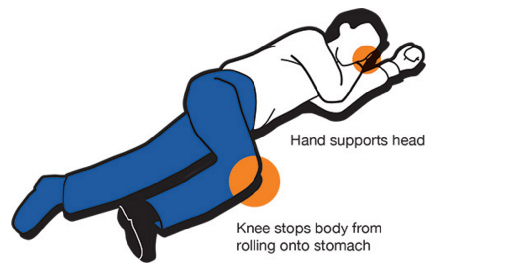

• Low heart rate
• Slow breathing rate
• Cooler skin temperature
• Constricted pupils
• Relaxed muscles
• Sweating
• Sleepy
• Respirtory or Cardiac arrest
Here are some ways to help someone who is experiencing an opiod overdose:
Narcan Administration
How to use nasal naloxone on a victim

Narcan (Naloxone) can be used to reverse opiod overdoses.
• Follow assembly instructions on box. This should include assembling medicine with aerator
• Spray half of the medication in each nostril
• Call 911 immediately, as Narcan can wear off and victim can overdose again
• Victim may become aggresive when waking up.
• You may use another dose if victim remains unconscious
• Put the victim in Recover Position.
• If they vommit, wipe and clean their mouth so they don't choke or inhale the vommit.
• Do not put the victim in a cold shower, it may put them in shock.
Recovery Position
Turn the victim on their side so they do not choke or inhale vomit.

If you believe the victim has become unconscious, click here.